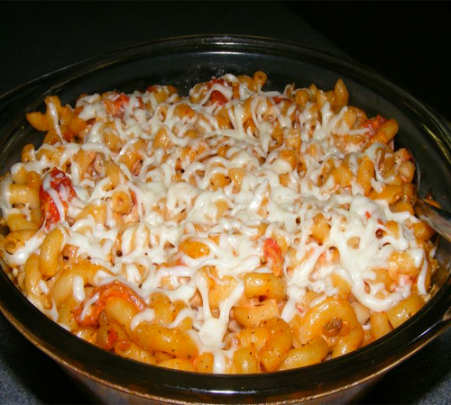

Chronicles Of A Young Mom
Home Page
Meatless Italian Macaroni Bake

Prep time: 5 min Cook time: 20 min. Servings: 4
Ingredients:
- 2 cups elbow macaroni, cooked & drained (Ronzani Whole Wheat pasta).
- 16 ounces stewed tomatoes (no salt added if available)
- 3/4 cup part-skimmed mozzarella cheese, shredded
- 1/2 cup reduced-fat mayonnaise (NOT Miracle Whip)
- 1 teaspoon italian seasoning (or Mrs Dash Italian Medley)
Directions:
- Preheat oven to 350°F
- In a large mixing bowl combine the cooked marcaroni, stewed tomatoes, 1/2 cup of the mozzarella, italian seasoning and mayonnaise
- Spoon the mixture into a 1 1/2 quart casserole dish; Sprinkle with the remaining 1/4 cup mozzarella cheese
- Bake in the preheated 350°F oven for approximately 20 min (your time may vary) until warm and all cheese is melted
Note:Do NOT substitute anything else for the mayonnaise, i.e. NO salad dressing, NO Miracle Whip, as the recipe is specifically tailored to the result that is created by the use of mayonnaise
Variation: Use a different pasta such as rotini or penne rigati.